ДИЗАЙН ТРЕХКОМНАТНОЙ КВАРТИРЫ С ЭЛЕМЕНТАМИ ЭКО-СТИЛЯ
О проекте
О проекте
Хозяева квартиры площадью 67,1 м2 в центре Санкт-Петербурга мечтали о современном, лаконичном интерьере с натуральными материалами.
Основными цветами во всей квартире стали оттенки светло-серого, которые прекрасно сочетаются с деревянными элементами.
Деревянная реечная перегородка в кухне-гостиной несёт в себе функцию зонирования пространства, отделяя кухонную и столовую зоны от гостевой. Также, дерево на фасадах мебели и стеновых панелях несёт декоративную функцию, делая интерьер уютным.
Для детской была выбрана Северная тематика, отраженная во фреске с животными севера на стене у кровати и вигвамом в игровой зоне.
Визуализации интерьеров
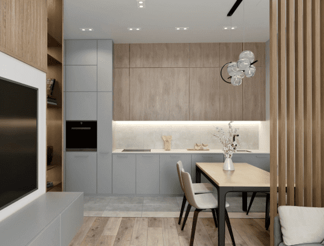
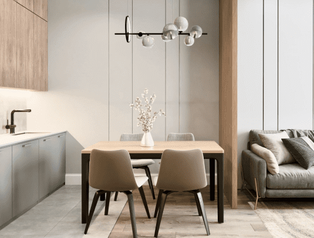
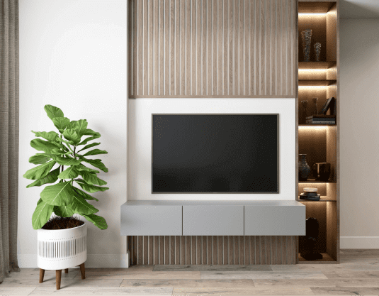
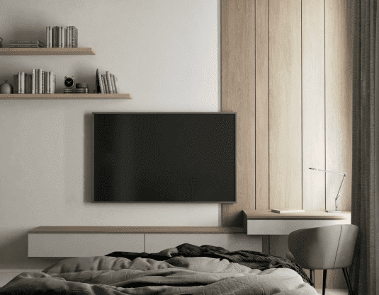
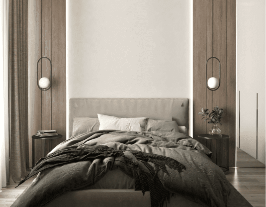
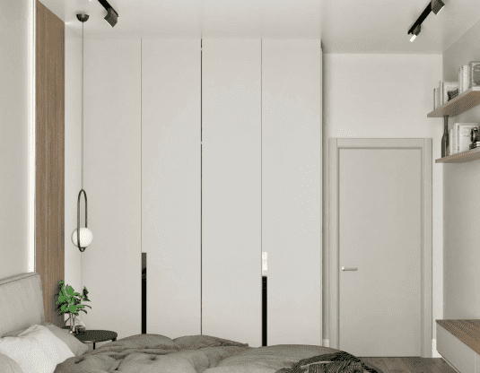
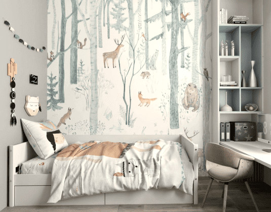
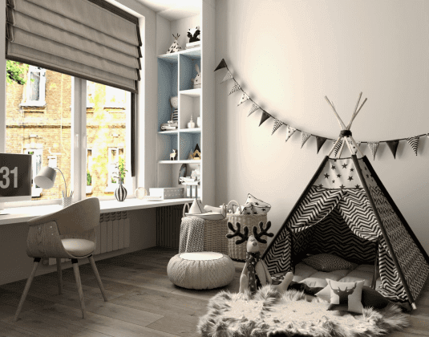
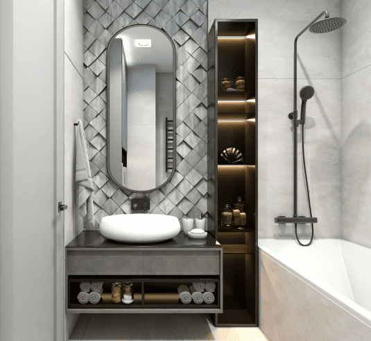
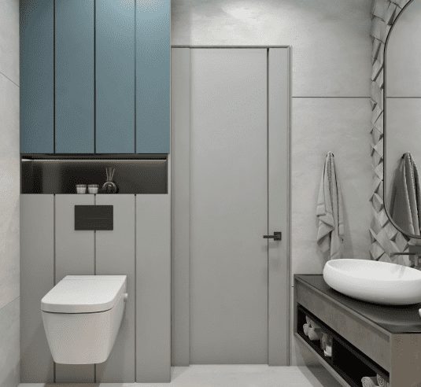
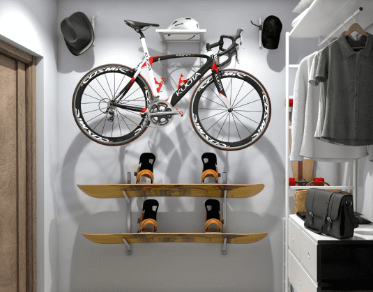
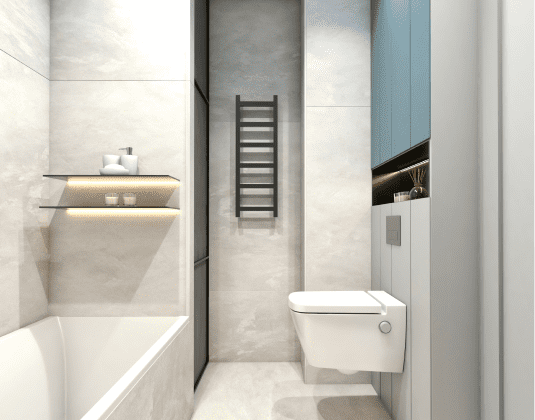